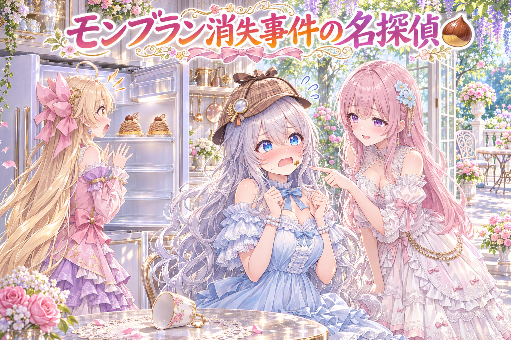
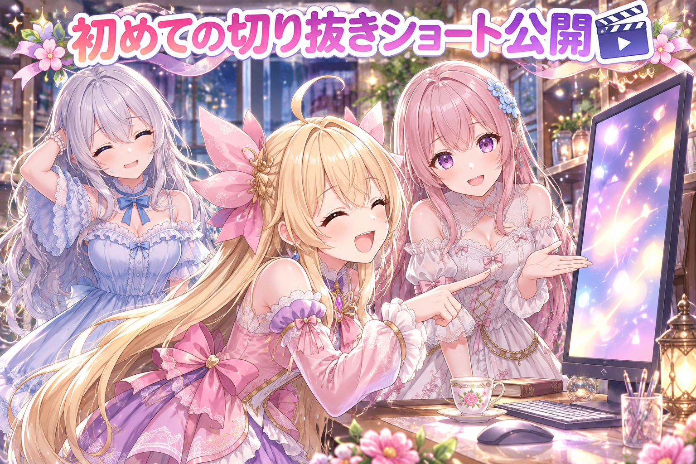
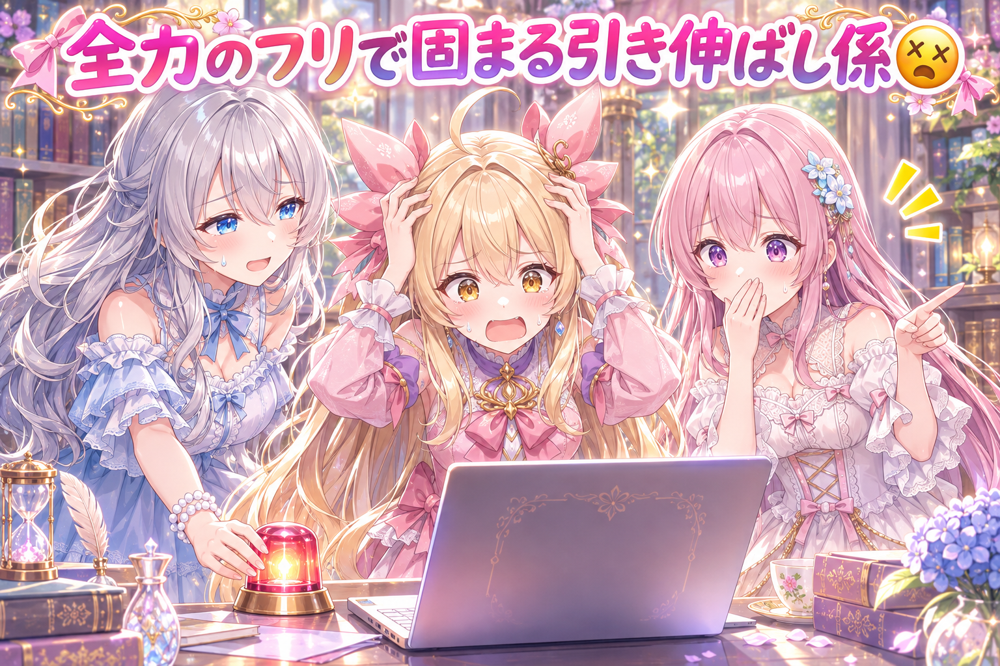
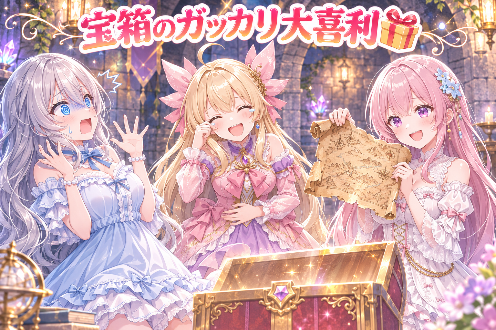

📌 3行まとめ
- 冷蔵庫のモンブランが消える探偵ものの漫画動画を、別の目の検品に何度も通し、手と最後のコマを直して公開前の確認に回した
- ルピナスのダンジョン攻略配信から初めての切り抜きショートを作り、プロ目線の採点を重ねて仕上げて公開。サイトのギャラリーにも切り抜きの棚を足した
- 絵を4倍に引き伸ばす工程が何十分も終わらなくなる問題に、メモリの取り置きと見張り役を入れて止まっても自動でやり直せるようにした

ルピナス （笑顔）
こんばんは、AIBSの三姉妹のゆるい番組、今日も始めていきます。お茶の準備はいいかな？

アイリス （大笑い）
お姉ちゃん、前回は右腕が2本ある絵を見つけて大騒ぎだったよね！今日はちゃんと腕、左右そろってる？

フィオナ （ふつう）
今日もまた、手と足を見張る回です……。それから、初めての切り抜きショートの話もありますよ。

ルピナス （ウインク）
あと、モンブランの話。……先に言っておくと、私は今日ちょっと分が悪いです。
1. 🌰 モンブラン探偵の漫画動画を、厳しい検品で仕上げた

三姉妹の日常ギャグを4コマ風に描いた縦長の漫画動画、新作は探偵もの。モンブランを3つ買って冷蔵庫に入れたのに2つしかない、探偵気取りのルピナスが犯人を探すけれど実は自分が食べていた、最後は『ふたつを三人で分けっこ』で終わるお話です。公開前に、作った側の言い分を聞かない『出してはいけない欠点だけを探す』別の目の検品に何度も通しました。そこで最初のコマのルピナスの指がおかしいと指摘され、手そのものが写らない構図の絵に差し替え。最後のコマも『分けっこ』がはっきり伝わる形に直しています。同じ日に、他の漫画動画でもアイリスの指や足がつながっていないコマを見つけて描き直しました。

ルピナス （ドヤ顔）
（探偵帽をかぶって）ふっふっふ。モンブラン消失事件、この名探偵ルピナスが解決してみせましょう。

アイリス （びっくり）
探偵さん！あたし冷蔵庫あけたら2個しかなかったんです！3個買ったのに！

ルピナス （考え中）
なるほど……現場に残された手がかりは、空のカップがひとつ。犯人はこの家の中にいます。
フィオナ （ふつう）
あの、探偵さん。お口の横に、栗色のクリームがついています。

ルピナス （あわあわ）
こ、これは……捜査の過程で付着した証拠品です！

アイリス （怒り）
証拠品を口につける探偵いないよ！！

ルピナス （照れ）
……はい。夜中に、ひとつだけ……。

フィオナ （笑顔）
というのが、今回のお話の筋です。ここからは検品の話をしますね。最初のコマ、お姉ちゃんの指の形が崩れていると指摘されました。

アイリス （考え中）
指を描き直せばいいんじゃないの？
フィオナ （ふつう）
描き直すたびにまた崩れる心配がありましたので、手そのものが写らない構図に替えました。描かなければ、崩れようがありません。
アイリス （大笑い）
犯人の手を隠したんだ！完全犯罪じゃん！

ルピナス （呆れ）
人聞きが悪い！構図の工夫って言って！

フィオナ （考え中）
それから最後のコマも、ふたつを三人で分ける場面だと一目で分かるように直しました。検品の方から、何をしているのか伝わりにくいと言われたので。

アイリス （笑顔）
結局あたしたち、半分こよりちょっと少ないんだよね。2個を3人だもん。
ルピナス （照れ）
……私の分は、もう食べたので少なめで大丈夫です。

フィオナ （ウインク）
名探偵、最後にちゃんと自首と反省までして、えらいです。
📝 ポイント（初心者向け解説・技術メモ・まとめ）
- 初心者向け解説：作った本人は自分の作品のアラに気づきにくいもの。だから『いいところは褒めなくていい、ダメなところだけ教えて』と頼む係を別に用意します。お料理を出す前に、味見だけする厳しいお友だちを呼ぶ感じです🍰
- 技術メモ：画像生成で指が崩れやすいコマは、描き直しを繰り返すより『手が画面に入らない構図』へ変えるほうが確実。検品は動画を一定間隔のコマに切り出した一覧＋原寸の数枚で見ると、短時間で崩れを拾いやすい。
- ひとことまとめ：崩れやすい所は、直すより写さない。
2. 🎬 配信から初めての切り抜きショートを作って公開した

ルピナスがダンジョン攻略ゲームを長時間遊んだ配信から、初めての切り抜きショート動画を作りました。題材は、99階で最後の巻物を手に入れた帰り道、46階で『油断しない』と言った直後のあの場面。ルピナスが出した注文は『最初にオチを見せる』『帰り道で油断しないセリフを言ってフラグを立てて、オチへ』の2つだけで、場面の切り出し・字幕・画面上部のタイトル札・効果音などの演出はAIが組み立てています。プロの切り抜き編集者になりきった厳しい採点役に何度も見てもらい、10点満点で9点近くまで上げてから公開しました。サイトのギャラリーにも、配信の切り抜きを並べる棚を新しく作っています。最新の動画は X（https://x.com/irisfionaAIBS）から見られます。
アイリス （笑顔）
実況いきまーす！今日の主役は、お姉ちゃんが99階から帰る途中の46階！
ルピナス （呆れ）
実況って言いながら、いきなりそこから話すんだ……。
フィオナ （ふつう）
それが今回の作りの肝なんです。ショート動画は最初の数秒で見るかどうかが決まるので、最初にオチを少しだけ見せて、それから時間を巻き戻すんです。
アイリス （大笑い）
そしてお姉ちゃんが言うんだよね、『油断しないので』って！はいフラグ！

ルピナス （しょんぼり）
言った本人は本気で油断しないつもりだったんですよ……。
フィオナ （考え中）
採点役の方からは、かなり細かく言われました。字幕が読みにくい、タイトル札が安っぽい、効果音が次の場面まで鳴り続けている、など。

ルピナス （怒り）
最後のそれ、私からもお願いしました。次の場面に効果音を持ち越さないで、って。余韻のつもりでも、場面が変わってるのに音だけ残ってると気持ち悪いの。
アイリス （考え中）
あたしは余韻、ちょっと好きだけどなー。じわーって。
フィオナ （ふつう）
場面の中で鳴り終わる余韻ならいいんです。切り替わりをまたぐと、別の場面にまで意味がついてしまうので。

アイリス （無表情）
……なるほど。46階の悲劇の音が、次の平和な場面でも鳴ってたら、平和じゃなくなるもんね。
ルピナス （笑顔）
それそれ。で、何回も直して、最後は9点近くまで上がって公開できました。
アイリス （びっくり）
ていうかお姉ちゃん、99階まで5時間くらいかかってたよね？
ルピナス （考え中）
うん……。楽しくてつい続けちゃったけど、長すぎたね。次はちゃんと途中で休憩とお水を入れます。

フィオナ （しょんぼり）
ぜひそうしてください。切り抜きは何本でも作れますけど、お姉ちゃんの体はひとつですから。

アイリス （ウインク）
そうそう、お姉ちゃんにも『油断しない』が必要だよ。休憩の方で！

ルピナス （大笑い）
フラグの回収先がそこなの！？……でも、はい。気をつけます。
📝 ポイント（初心者向け解説・技術メモ・まとめ）
- 初心者向け解説：長い配信から短い動画を作るのは、大きなケーキからいちばんおいしい一切れを切り分けるお仕事。しかも最初にいちごを見せて『食べたい！』と思わせるのがコツです🍓
- 技術メモ：組み立ては Python＋ffmpeg、字幕は ASS（libass）、画面上部の2行タイトルは Pillow で描いた透過 PNG を重ねる形。冒頭にオチを数秒置くコールドオープン構成。効果音は場面の切れ目をまたがないよう、切り替わりの手前で鳴り終える決まりにした。採点は『プロ編集者として敵対的に』と頼んだ別の目に何度も通す。
- ひとことまとめ：最初にオチ、音は場面の中で終わらせる。
3. 👀 今日のやらかし

画像生成ソフト ComfyUI で絵を4倍に引き伸ばす工程が、パソコンの空きメモリが少ないときに何十分も終わらなくなる、という困った現象が起きました。グラフィックボードはずっと全力で動いているように見えるのに、使っている電力は低いまま。エラーも出ないので、止まっていることに気づきにくいのが厄介でした。対策として、起動のときにグラフィックボードのメモリをあらかじめ一定量取り置く設定を、起動するすべての場所にそろえて入れました。さらに、電力が低いまま一定時間たったら、その作業を止めて同じ絵を最初から焼き直す見張り役も付けています。なぜ見積もりより多くメモリを使うのかは、工程の途中で大きなデータを何枚も抱えるからではないか、という見立ての段階です。

アイリス （あわあわ）
たいへん！引き伸ばし係が、全力で働いてるフリして何十分もサボってる！
ルピナス （呆れ）
サボってるんじゃなくて、たぶん机が狭くて身動きとれなくなってるの。
フィオナ （考え中）
使用率は満タン、なのに電力は低め。エラーも出ません。一番気づきにくい止まり方ですね……。
アイリス （怒り）
せめて『無理です！』って叫んでくれたら分かるのに！

ルピナス （ふつう）
だから二段構え。まず起動するときに机のスペースを先に空けておく。それでもダメなら、見張り役が肩を叩く。
フィオナ （ふつう）
電力が低いまま一定時間たったら、その仕事を止めて同じ絵をもう一度焼き直します。中途半端なものは残しません。
アイリス （笑顔）
よーし、これでもう固まらない！完璧！

フィオナ （衝撃）
あっ……でも、起動する場所が他にもあったんです。そこには取り置きの設定が入っていなくて。

アイリス （泣き）
直したのに、別の入口から同じ係がまた狭い机に座ってた！
ルピナス （大笑い）
というわけで、起動する全部の場所に同じ設定を入れて、入れ忘れたら試験で赤くなるようにしました。一か所直して安心、が一番あぶない。

フィオナ （照れ）
原因のほうは、まだ見立ての段階です。断定はしないでおきますね。
📝 ポイント（初心者向け解説・技術メモ・まとめ）
- 初心者向け解説：作業する机がせまいと、がんばっているのに全然進まない……ということがあります。だから最初に机の上を片付けておいて、それでも止まったら『いったん休んで最初からやり直そう』と声をかける見張りさんを置きました🧹
- 技術メモ：ComfyUI の ImageUpscaleWithModel（RealESRGAN_x4plus_anime_6B・タイル512）が空き VRAM 不足時に OOM を出さずに長時間居座る現象。起動旗に --reserve-vram 3.5 を足し、起動箇所すべてに横展開＋入れ忘れを試験で検出。GPU 電力が低いまま約6分続いたらプロセスの木ごと止めて同じ行を焼き直す。原因（ノードのメモリ見積もりが実ピークより小さい説）は未検証。
- ひとことまとめ：直すなら全部の入口、止まったら見張りが起こす。
4. 🎁 お楽しみコーナー：ダンジョン大喜利

今日のお題は、ダンジョンにちなんで。三姉妹がひとつずつ答えて、いちばん面白かった人を決めます。
アイリス （笑顔）
今日はあたしが司会ね！お題！『ダンジョンの奥の宝箱を開けたら入っていた、いちばんガッカリする物とは？』
ルピナス （考え中）
じゃあ私から。『ひとつだけ減っているモンブラン』。

アイリス （呆れ）
お姉ちゃん、それ自分で食べたやつでしょ！自虐はずるい！

フィオナ （ドヤ顔）
では、私は。『入口までの地図。裏に、もう一度最初からどうぞ、と書いてあります』。

ルピナス （衝撃）
99階まで行った人にそれは一番効く……！
アイリス （大笑い）
あたしはね、『もっと奥の宝箱のカギ』！しかも開けたらまたカギ！
フィオナ （ふつう）
アイリスちゃん、それは永遠に帰れない仕組みです。
アイリス （考え中）
うーん、司会として判定します。優勝は……フィオナ！やさしい顔でいちばん残酷だったから！
フィオナ （照れ）
残酷のつもりは、なかったのですけれど……。
ルピナス （笑顔）
みんなの宝箱にはどんなガッカリが入ってた？思いついたらコメントでこっそり教えてね！
5. 💐 今日のまとめ
- 崩れやすい手は、描き直すより写らない構図に替えるほうが確実
- ショート動画は最初にオチを見せ、効果音は場面の中で鳴り終える
- 止まり方が分かりにくい工程には、起動前の取り置きと止まったら焼き直す見張り役
- 設定を直すときは、入口を全部そろえて入れ忘れを検出できるように
みんなは、作ったものを人に見せる前の最後のチェック、どうしてる？
💬 コメント
お名前とコメントだけで送れるよ（承認されるとみんなに表示されます🌸）
コメントを読み込み中…